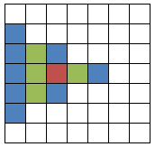
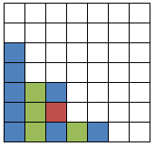
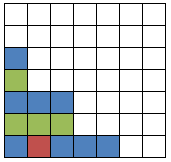

= 원래 게임판
가상의 퍼즐게임에 들어갈 코드를 만들어 보자.
이 퍼즐게임의 게임판은 N×N 의 크기이고,
게임판의 각각의 칸은 빈칸이거나, 특정 색의 1×1 크기인 정사각형 블럭이 놓여 있다.
= 원래 게임판
이것이 게임판의 초기 상태이다. 이 게임판을 오른쪽으로 90도 돌리면 아래와 같은 모양이 될 것이다.

이 블럭들을 모두 아래쪽으로 끝까지 밀어놓으면 아래와 같은 모양이 된다.

= SpinAndSlide(원래 게임판, 1)
'게임판을 오른쪽으로 90도 회전한 뒤, 블럭들을 모두 아래쪽으로 끝까지 미는' 동작을 SpinAndSlide 라고 정의하자.
주어진 게임판에 SpinAndSlide를 여러번 적용했을 때 그 결과가 어떻게 될지를 알아내 보자.
예를 들어, 바로 위 그림에 SpinAndSlide를 한 번 더 적용한 결과는 아래와 같다.

= SpinAndSlide(원래 게임판, 2)
첫번째 줄에 게임판의 크기를 나타내는 N이 주어진다. N은 1 이상 100 이하의 정수이다.
두번째 줄에 SpinAndSlide를 몇 번 적용할지를 나타내는 M이 주어진다. M은 0 이상 100 이하의 정수이다.
세번째 줄부터 N개의 줄에 걸쳐 게임판의 초기 상태가 주어지는데,
각 줄은 (개행문자를 제외하고) N개의 문자로 이루어져 있다.
각 문자는, 각 칸에 블럭이 들어있는 경우 블럭의 색을 나타내는 알파벳 대문자이며,
빈칸인 경우 . 이다.
게임판의 초기 상태는 블럭들을 모두 아래쪽으로 밀어놓은 상태이다.
게임판의 초기 상태에 SpinAndSlide를 M회 적용한 결과를, N개의 줄에 걸쳐 출력한다.
각 줄은 (개행문자를 제외하고) N개의 문자로 이루어져야 한다.
각 칸에 블럭이 들어있는 경우 블럭의 색을 나타내는 알파벳 대문자를,
빈칸인 경우 . 을 출력한다.
7 2 ....... ....... ...A... ...B... ..ACA.. ..BBB.. .AAAAA.
....... ....... A...... B...... AAA.... BBB.... ACAAA..
모든 숨겨진 입력 데이터에 대해 정답을 맞춘 데이터의 수에 비례하여 점수를 준다.